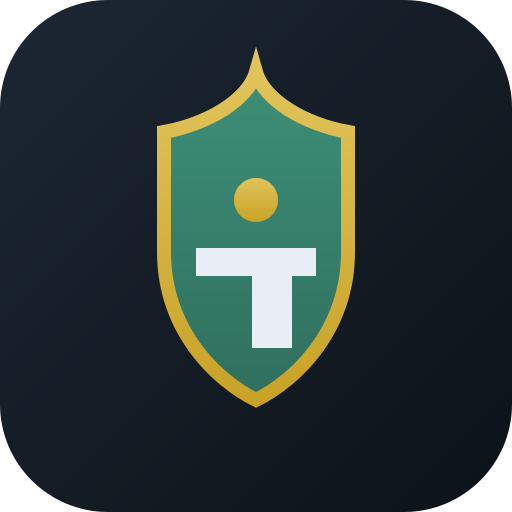

Masaüstü uygulama
Ayarlar
Portal adresi kaydedilince site bu pencerede açılır. Yedekler bilgisayarınıza yazılır.
Bu bilgisayardaki yedekler
«Siteye yükle» portal verisinin üzerine yazabilir.

Atlı Karakaya
Yükleniyor…
Masaüstü uygulama
Portal adresi kaydedilince site bu pencerede açılır. Yedekler bilgisayarınıza yazılır.
«Siteye yükle» portal verisinin üzerine yazabilir.